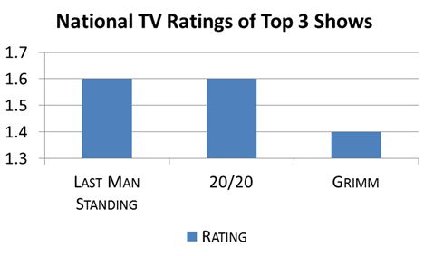
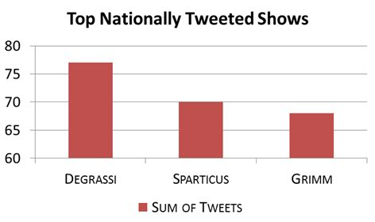

<!--I completed this project for an Undergraduate course on web GIS...BACK IN 2013!
Enjoy browsing what people were watching back in 2013. When The Walking Dead was all the rage.
Though I wrote most of this code, there may be bits and pieces I copied and adapted from online tutorials and StackOverflow.

By Andrea Minano Goldring-->
<!DOCTYPE html>
<html>
<head>
	<title>Mapping TV Ratings with Tweets</title>
	<meta charset="utf-8" />

	<meta name="viewport" content="width=device-width, initial-scale=1.0">

	<link rel="stylesheet" href="https://unpkg.com/leaflet@1.9.4/dist/leaflet.css" integrity="sha256-p4NxAoJBhIIN+hmNHrzRCf9tD/miZyoHS5obTRR9BMY=" crossorigin=""/>
    <script src="https://unpkg.com/leaflet@1.9.4/dist/leaflet.js" integrity="sha256-20nQCchB9co0qIjJZRGuk2/Z9VM+kNiyxNV1lvTlZBo=" crossorigin=""></script>
	<!--<link rel="stylesheet" href="http://cdn.leafletjs.com/leaflet-0.7.3/leaflet.css" />-->
	<!--[if lte IE 8]><link rel="stylesheet" href="http://cdn.leafletjs.com/leaflet-0.4/leaflet.ie.css" /><![endif]-->
	<script type="text/javascript" src="https://www.google.com/jsapi"></script>
    <script type="text/javascript">
	 		function reverseValue(value){
				if (value == 1){return 'Say Yes to the Dress, Last Man Standing, Spartacus';}
				else if (value == 2){return 'Grimm';}
				else if (value == 3){return 'Touch, Cult, Say Yes to the Dress, Grimm, Jay Leno, Jimmy Fallon, Masterchef';}
				else if (value == 4){return 'Spartacus';}
				else if (value == 5){return 'Touch, Say Yes to the Dress';}
				else if (value == 6){return 'Touch, Fashion Police, Spartacus';}
				else if (value == 7){return 'Bill Maher';}
				else if (value == 8){return 'Say Yes to the Dress, Masterchef';}
				else if (value == 9){return 'Spartacus, Degrassi';}
				else if (value == 10){return 'Touch, Spartacus, Degrassi';}
				else if (value == 11){return 'Degrassi';}
				else if (value == 12){return 'Say Yes to the Dress, Degrassi';}
				else if (value == 13){return 'Degrassi, Jay Leno';}
				else if (value == 14){return 'Fashion Police, Grimm, Jimmy Fallon';}
				else if (value == 15){return 'Say Yes to the Dress, Grimm';}
				else if (value == 16){return 'Fashion Police, Say Yes to the Dress';}
				else if (value == 17){return 'Bill Maher, Say Yes to the Dress';}
				else if (value == 18){return 'Say Yes to the Dress, Jimmy Fallon';}
				else if (value == 19){return 'Kitchen Nightmares';}
				else if (value == 20){return 'Touch';}
				else if (value == 21){return 'Say Yes to the Dress, Jay Leno';}
				else if (value == 22){return 'Spartacus, Jay Leno';}
				else if (value == 23){return 'Bill Maher, Say Yes to the Dress, Grimm';}
				else if (value == 24){return "Grimm, What's Cooking, Spartacus, Jimmy Fallon";}
				else if (value == 25){return 'Touch, Bill Maher, Say Yes to the Dress, Jay Leno';}
				else if (value == 26){return 'Say Yes to the Dress, Degrassi, Jay Leno, Jimmy Fallon';}
				else if (value == 27){return 'Say Yes to the Dress';}
				else if (value == 28){return 'Fashion Police';}
				else if (value == 29){return 'Grimm, Spartacus';}
				else if (value == 30){return 'Jay Leno';}
				else if (value == 31){return 'Fashion Police, Bill Maher, Grimm, Degrassi, Jimmy Fallon';}
				else if (value == 32){return 'Grimm, Jay Leno';}
				else if (value == 33){return 'Fashion Police, Bill Maher, Say Yes to the Dress, Grimm';}
				else if (value == 34){return 'Fashion Police, Say Yes to the Dress, Grimm, Jay Leno';}
				else if (value == 35){return 'Touch, Degrassi';}
				else if (value == 36){return 'Degrassi, Jimmy Fallon';}
				else if (value == 37){return 'Touch, Fashion Police, Say Yes to the Dress';}
			else {return 'Others';}
		}
	 
      function drawChart(in_array) {
		var arr = new Array(40);
		arr = [['TV Show', 'Number of Tweets']];
		var count = 1;
		var name;
		var name_len;
		var num_var;
		for (var i = 0; i < in_array.length; i++){
			name = reverseValue(in_array[i][0]);
			num_var = in_array[i][1];
			name_len = name.split(", ");
			for (var j = 0; j < name_len.length; j++){
				arr[count] = [name_len[j], num_var];
				count = count + 1;
			}
		}
		
		var data = google.visualization.arrayToDataTable(arr);

        var chart = new google.visualization.PieChart(document.getElementById('chart_div'));
        chart.draw(data, {title: 'Number of Tweets per TV Show'});
      }
	  
      google.load("visualization", "1", {packages:["corechart"]});
      google.setOnLoadCallback(drawChart);
    </script>
	<style>
	
		body {
		background: #000000;
		}
		
		#map {
		position: fixed; 
		top: 0; 
		left: 0; 
	
		/* Preserve aspet ratio */
		min-width: 100%;
		min-height: 100%;
		}
		
		.popup {
		width: 800px;
		}
		
		h3 {
		text-align: center;
		}
		h4 {
		font: 14px Courier; 
		text-align: center;
		color: #FF3300;
		}
		
		h5 {
		text-align: center;
		font: 12px Courier;
		}

		h6 {
		text-align: right;
		font: 12px Courier;
		}
		
		A:link {font: verdana; font-size: 14px; font-weight: bold; color: #000000; text-decoration: none}
		A:visited {font: verdana; font-size: 14px; font-weight: bold; color: #000000; text-decoration: none}
		A:active {font: verdana; font-size: 14px; font-weight: bold; color: #000000; text-decoration: none}
		A:hover {font: verdana; font-size: 14px; font-weight: bold; color: #FF6600}
		
		.info {
			padding: 6px 8px;
			text-align: center;
			font: 14px/16px Arial, Helvetica, sans-serif;
			background: white;
			background: rgba(255,255,255,1);
			box-shadow: 0 0 15px rgba(0,0,0,0.2);
			width: 280px;

		}

		.info2 {
			padding: 6px 8px;
			font: 14px/16px Arial, Helvetica, sans-serif;
			border-radius: 5px;
		}
		
		.info h2 {
			margin: 0 0 5px;
			color: #000000;
		}
		
		.legend {
			text-align: left;
			line-height: 18px;
			bottom: 25px;
			color: #555;
		}
		.legend i {
			width: 18px;
			height: 18px;
			float: left;
			margin-right: 8px;
			opacity: 0.7;
		}
	</style>
</head>
<body>
	<div id="map"></div>
	
	<!--<script src="http://cdn.leafletjs.com/leaflet-0.7.3/leaflet.js"></script>-->
	<script src="data/friday.json"></script>
	<script src="data/friday/friday.json"></script>
	<script src="data/friday/friday_billmaher.json"></script>
	<script src="data/friday/friday_cooking.json"></script>
	<script src="data/friday/friday_cult.json"></script>
	<script src="data/friday/friday_degrassi.json"></script>
	<script src="data/friday/friday_fashpolice.json"></script>
	<script src="data/friday/friday_grimm.json"></script>
	<script src="data/friday/friday_jayleno.json"></script>
	<script src="data/friday/friday_jimmyfallon.json"></script>
	<script src="data/friday/friday_knightmares.json"></script>
	<script src="data/friday/friday_lastman.json"></script>
	<script src="data/friday/friday_masterchef.json"></script>
	<script src="data/friday/friday_piers.json"></script>
	<script src="data/friday/friday_sayyes.json"></script>
	<script src="data/friday/friday_spartacus.json"></script>
	<script src="data/friday/friday_touch.json"></script>

	
	<script>
		//create map object and import basemap
		var map = L.map('map').setView([37.8, -88], 4);
		
		L.tileLayer('https://{s}.basemaps.cartocdn.com/light_nolabels/{z}/{x}/{y}.png', {
			maxZoom: 18,
			attribution: '&copy; <a href="https://www.openstreetmap.org/copyright">OpenStreetMap</a> contributors, &copy; <a href="https://carto.com/attribution">CARTO</a>',
		}).addTo(map);
		
		// title of the map
		var info = L.control();

		info.onAdd = function (map) {
			this._div = L.DomUtil.create('div', 'info');
			this.update();
			return this._div;
		};

		info.update = function (props) {
			this._div.innerHTML = "<h2>Tweet-Mapping TV Ratings<br>Friday, March 22, 2013</h2><br>" + 
			"<div class='info2 legend'><b>Top Tweeted TV Show</b><br>" +
			//"<i style ='background:#000066'></i>Bill Maher & Others<br>" +
			"<i style ='background:#33CC66'></i>Degrassi<br>" +
			"<i style ='background:#990099'></i>Fashion Police<br>" +
			//"<i style ='background:#FFCC33'></i>Fashion Police & Others<br>" +
			"<i style ='background:#FF6600'></i>Grimm<br>" +
			//"<i style ='background:#FF0000'></i>Grimm & Others<br>" +
			"<i style ='background:#FF6666'></i>The Tonight Show with Jay Leno<br>" +
			"<i style ='background:#33CC00'></i>Kitchen Nightmares<br>" +
			"<i style ='background:#006600'></i>Say Yes to the Dress<br>" +
			//"<i style ='background:#996633'></i>Say Yes to the Dress & Others<br>" +
			"<i style ='background:#666666'></i>Spartacus<br>" +
			//"<i style ='background:#660033'></i>Spartacus & Others<br>" +
			"<i style ='background:#FFFF33'></i>Touch<br>" +
			//"<i style ='background:#66FFFF'></i>Touch & Others<br>" +
			"<i style ='background:#000066'></i>Various Shows<br>" +
			
			"<br>" +
			"" +
			
			"</div>";
		};
				   
		info.addTo(map);

		var info2 = L.control();

		info2.onAdd = function (map) {
			this._div = L.DomUtil.create('div', 'info');
			this.update();
			return this._div;
		};

		info2.update = function (props) {
			this._div.innerHTML = "<a href='index.html'>MON  </a><a href='tuesday.html'>TUE  </a><a href='wednesday.html'>WED  </a><a href='thursday.html'>THU  </a><a href='friday.html'>FRI  </a><a href='saturday.html'>SAT  </a><a href='sunday.html'>SUN  </a>";
		};

		info2.addTo(map);
		
		function getValue(name){
		if (name == 'Say Yes to the Dress, Last Man Standing, Spartacus'){return 1;}
		else if (name == 'Grimm'){return 2;}
		else if (name == 'Touch, Cult, Say Yes to the Dress, Grimm, Jay Leno, Jimmy Fallon, Masterchef'){return 3;}
		else if (name == 'Spartacus'){return 4;}
		else if (name == 'Touch, Say Yes to the Dress'){return 5;}
		else if (name == 'Touch, Fashion Police, Spartacus'){return 6;}
		else if (name == 'Bill Maher'){return 7;}
		else if (name == 'Say Yes to the Dress, Masterchef'){return 8;}
		else if (name == 'Spartacus, Degrassi'){return 9;}
		else if (name == 'Touch, Spartacus, Degrassi'){return 10;}
		else if (name == 'Degrassi'){return 11;}
		else if (name == 'Say Yes to the Dress, Degrassi'){return 12;}
		else if (name == 'Degrassi, Jay Leno'){return 13;}
		else if (name == 'Fashion Police, Grimm, Jimmy Fallon'){return 14;}
		else if (name == 'Say Yes to the Dress, Grimm'){return 15;}
		else if (name == 'Fashion Police, Say Yes to the Dress'){return 16;}
		else if (name == 'Bill Maher, Say Yes to the Dress'){return 17;}
		else if (name == 'Say Yes to the Dress, Jimmy Fallon'){return 18;}
		else if (name == 'Kitchen Nightmares'){return 19;}
		else if (name == 'Touch'){return 20;}
		else if (name == 'Say Yes to the Dress, Jay Leno'){return 21;}
		else if (name == 'Spartacus, Jay Leno'){return 22;}
		else if (name == 'Bill Maher, Say Yes to the Dress, Grimm'){return 23;}
		else if (name == "Grimm, What's Cooking, Spartacus, Jimmy Fallon"){return 24;}
		else if (name == 'Touch, Bill Maher, Say Yes to the Dress, Jay Leno'){return 25;}
		else if (name == 'Say Yes to the Dress, Degrassi, Jay Leno, Jimmy Fallon'){return 26;}
		else if (name == 'Say Yes to the Dress'){return 27;}
		else if (name == 'Fashion Police'){return 28;}
		else if (name == 'Grimm, Spartacus'){return 29;}
		else if (name == 'Jay Leno'){return 30;}
		else if (name == 'Fashion Police, Bill Maher, Grimm, Degrassi, Jimmy Fallon'){return 31;}
		else if (name == 'Grimm, Jay Leno'){return 32;}
		else if (name == 'Fashion Police, Bill Maher, Say Yes to the Dress, Grimm'){return 33;}
		else if (name == 'Fashion Police, Say Yes to the Dress, Grimm, Jay Leno'){return 34;}
		else if (name == 'Touch, Degrassi'){return 35;}
		else if (name == 'Degrassi, Jimmy Fallon'){return 36;}
		else if (name == 'Touch, Fashion Police, Say Yes to the Dress'){return 37;}
			else {return 9999;}
		}
		
		//create pop up window
		function onEachFeature_Friday(feature, layer) {
		if (feature.properties && feature.properties.f_max1 && feature.properties.f_max2 && feature.properties.f_max3){
			var max1 = getValue(feature.properties.f_max1);
			var max2 = getValue(feature.properties.f_max2);
			var max3 = getValue(feature.properties.f_max3);
			var other = getValue('Others');
			layer.bindPopup("<b><h3>" + feature.properties.NAME10 + "<br></h3>Most Popular TV Show(s): </b>" + feature.properties.f_max1 + "<br><br><center><button onclick='drawChart([[" + max1 + ", " + feature.properties.f_count1 + "],[" + max2 + ", " + feature.properties.f_count2 + "],[" + max3 + ", " + feature.properties.f_count3 + "],[" + other + ", " + feature.properties.f_other + "]])'>Click for more info</button><div id='chart_div' style='width: 320px; height: 200px;'></center></div>");
		}
		else if (feature.properties.f_max1 && feature.properties.f_max2){
			var max1 = getValue(feature.properties.f_max1);
			var max2 = getValue(feature.properties.f_max2);
			var other = getValue('Others');
			layer.bindPopup("<b><h3>" + feature.properties.NAME10 + "<br></h3>Most Popular TV Show(s): </b>" + feature.properties.f_max1 + "<br><br><center><button onclick='drawChart([[" + max1 + ", " + feature.properties.f_count1 + "],[" + max2 + ", " + feature.properties.f_count2 + "],[" + other + ", " + feature.properties.f_other + "]])'>Click for more info</button><div id='chart_div' style='width: 320px; height: 200px;'></center></div>");
		}
		else if (feature.properties.f_max1){
			var max1 = getValue(feature.properties.f_max1);
			var other = getValue('Others');
			layer.bindPopup("<b><h3>" + feature.properties.NAME10 + "<br></h3>Most Popular TV Show(s): </b>" + feature.properties.f_max1 + "<br><br><center><button onclick='drawChart([[" + max1 + ", " + feature.properties.f_count1 + "],[" + other + ", " + feature.properties.f_other + "]])'>Click for more info</button><div id='chart_div' style='width: 320px; height: 200px;'></center></div>");
		}
		else {
			layer.bindPopup("Sorry! No tweets were available for this state");
		}
		
		}
		
		//create pop up for tweet
		function onEachFeature_Tweet(feature, layer){
			layer.bindPopup('<h5>' + feature.properties.tweet + '<h6>-@' + feature.properties.user + '</h6>');
		}
		//friday
		function getColor_Friday(d) {
			return d == 'Bill Maher, Say Yes to the Dress' ? '#000066' :
				   d == 'Bill Maher, Say Yes to the Dress, Grimm' ? '#000066' :
				   d == 'Degrassi' ? '#33CC66' :
				   d == 'Fashion Police' ? '#990099' : 
				   d == 'Fashion Police, Say Yes to the Dress' ? '#000066' :
				   d == 'Grimm' ? '#FF6600' :
				   d == 'Grimm, Spartacus' ? '#000066' :
				   d == 'Jay Leno' ? '#FF6666' :
				   d == 'Kitchen Nightmares' ? '#33CC00' :
				   d == 'Say Yes to the Dress' ? '#006600' :
				   d == 'Say Yes to the Dress, Degrassi' ? '#000066' :
				   d == 'Say Yes to the Dress, Grimm' ? '#000066' :
				   d == 'Say Yes to the Dress, Jimmy Fallon' ? '#000066' :
				   d == 'Spartacus' ? '#666666' :
				   d == 'Spartacus, Degrassi' ? '#000066' :
				   d == 'Touch' ? '#FFFF33' :
				   d == 'Touch, Degrassi' ? '#000066' :
				   d == 'Touch, Fashion Police, Say Yes to the Dress' ? '#000066' :
				   d == 'Touch, Spartacus, Degrassi' ? '#000066' :
							'#FFFFFF';
		}
		
		//style features
		function style_Friday(feature) {
			return {
				weight: 1,
				opacity: 1,
				color: '#424242',
				fillOpacity: 0.7,
				fillColor: getColor_Friday(feature.properties.f_max1)
			};
		}	

		//state json
		week_json_friday = new L.geoJson(all_week, {style: style_Friday, onEachFeature: onEachFeature_Friday});
		//tweet json
		all_tweets_json = new L.geoJson(all_tweets, {onEachFeature: onEachFeature_Tweet, pointToLayer: function (feature, latlng) {
				return L.circleMarker(latlng, {
					radius: 3,
					fillColor: "#ff7800",
					color: "#000",
					weight: 1,
					opacity: 1,
					fillOpacity: 0.8});
		}});
		
		billmaher_json = new L.geoJson(billmaher, {onEachFeature: onEachFeature_Tweet, pointToLayer: function (feature, latlng) {
				return L.circleMarker(latlng, {
					radius: 3,
					fillColor: "#52FF52",
					color: "#000",
					weight: 1,
					opacity: 1,
					fillOpacity: 0.8});
		}});
		
		cooking_json = new L.geoJson(cooking, {onEachFeature: onEachFeature_Tweet, pointToLayer: function (feature, latlng) {
				return L.circleMarker(latlng, {
					radius: 3,
					fillColor: "#F8FF2E",
					color: "#000",
					weight: 1,
					opacity: 1,
					fillOpacity: 0.8});
		}});
		
		cult_json = new L.geoJson(cult, {onEachFeature: onEachFeature_Tweet, pointToLayer: function (feature, latlng) {
				return L.circleMarker(latlng, {
					radius: 3,
					fillColor: "#FFA514",
					color: "#000",
					weight: 1,
					opacity: 1,
					fillOpacity: 0.8});
		}});
		
		degrassi_json = new L.geoJson(degrassi, {onEachFeature: onEachFeature_Tweet, pointToLayer: function (feature, latlng) {
				return L.circleMarker(latlng, {
					radius: 3,
					fillColor: "#CC8C25",
					color: "#000",
					weight: 1,
					opacity: 1,
					fillOpacity: 0.8});
		}});
		
		fashpolice_json = new L.geoJson(fashpolice, {onEachFeature: onEachFeature_Tweet, pointToLayer: function (feature, latlng) {
				return L.circleMarker(latlng, {
					radius: 3,
					fillColor: "#FF8E69",
					color: "#000",
					weight: 1,
					opacity: 1,
					fillOpacity: 0.8});
		}});
		
		grimm_json = new L.geoJson(grimm, {onEachFeature: onEachFeature_Tweet, pointToLayer: function (feature, latlng) {
				return L.circleMarker(latlng, {
					radius: 3,
					fillColor: "#FF1717",
					color: "#000",
					weight: 1,
					opacity: 1,
					fillOpacity: 0.8});
		}});
		
		jayleno_json = new L.geoJson(jayleno, {onEachFeature: onEachFeature_Tweet, pointToLayer: function (feature, latlng) {
				return L.circleMarker(latlng, {
					radius: 3,
					fillColor: "#FF1778",
					color: "#000",
					weight: 1,
					opacity: 1,
					fillOpacity: 0.8});
		}});
		
		jimmyfallon_json = new L.geoJson(jimmyfallon, {onEachFeature: onEachFeature_Tweet, pointToLayer: function (feature, latlng) {
				return L.circleMarker(latlng, {
					radius: 3,
					fillColor: "#B617FF",
					color: "#000",
					weight: 1,
					opacity: 1,
					fillOpacity: 0.8});
		}});

		knightmares_json = new L.geoJson(knightmares, {onEachFeature: onEachFeature_Tweet, pointToLayer: function (feature, latlng) {
				return L.circleMarker(latlng, {
					radius: 3,
					fillColor: "#3617FF",
					color: "#000",
					weight: 1,
					opacity: 1,
					fillOpacity: 0.8});
		}});
		
		lastman_json = new L.geoJson(lastman, {onEachFeature: onEachFeature_Tweet, pointToLayer: function (feature, latlng) {
				return L.circleMarker(latlng, {
					radius: 3,
					fillColor: "#9B8DF7",
					color: "#000",
					weight: 1,
					opacity: 1,
					fillOpacity: 0.8});
		}});
		
		masterchef_json = new L.geoJson(masterchef, {onEachFeature: onEachFeature_Tweet, pointToLayer: function (feature, latlng) {
				return L.circleMarker(latlng, {
					radius: 3,
					fillColor: "#8DEDF7",
					color: "#000",
					weight: 1,
					opacity: 1,
					fillOpacity: 0.8});
		}});
		
		piers_json = new L.geoJson(piers, {onEachFeature: onEachFeature_Tweet, pointToLayer: function (feature, latlng) {
				return L.circleMarker(latlng, {
					radius: 3,
					fillColor: "#07B595",
					color: "#000",
					weight: 1,
					opacity: 1,
					fillOpacity: 0.8});
		}});
		
		sayyes_json = new L.geoJson(sayyes, {onEachFeature: onEachFeature_Tweet, pointToLayer: function (feature, latlng) {
				return L.circleMarker(latlng, {
					radius: 3,
					fillColor: "#0DA347",
					color: "#000",
					weight: 1,
					opacity: 1,
					fillOpacity: 0.8});
		}});
		
		spartacus_json = new L.geoJson(spartacus, {onEachFeature: onEachFeature_Tweet, pointToLayer: function (feature, latlng) {
				return L.circleMarker(latlng, {
					radius: 3,
					fillColor: "#F2CA16",
					color: "#000",
					weight: 1,
					opacity: 1,
					fillOpacity: 0.8});
		}});

		touch_json = new L.geoJson(touch, {onEachFeature: onEachFeature_Tweet, pointToLayer: function (feature, latlng) {
				return L.circleMarker(latlng, {
					radius: 3,
					fillColor: "#660066",
					color: "#000",
					weight: 1,
					opacity: 1,
					fillOpacity: 0.8});
		}});
		
		//add group layers to the map
		var week_layer_friday = new L.LayerGroup();
		week_layer_friday.addLayer(week_json_friday);

		var all_tweets_layer = new L.LayerGroup();
		all_tweets_layer.addLayer(all_tweets_json);

		var billmaher_layer = new L.LayerGroup();
		billmaher_layer.addLayer(billmaher_json);
		
		var cooking_layer = new L.LayerGroup();
		cooking_layer.addLayer(cooking_json);
		
		var cult_layer = new L.LayerGroup();
		cult_layer.addLayer(cult_json);
		
		var degrassi_layer = new L.LayerGroup();
		degrassi_layer.addLayer(degrassi_json);
		
		var fashpolice_layer = new L.LayerGroup();
		fashpolice_layer.addLayer(fashpolice_json);
		
		var grimm_layer = new L.LayerGroup();
		grimm_layer.addLayer(grimm_json);

		var jayleno_layer = new L.LayerGroup();
		jayleno_layer.addLayer(jayleno_json);

		var jimmyfallon_layer = new L.LayerGroup();
		jimmyfallon_layer.addLayer(jimmyfallon_json);
		
		var knightmares_layer = new L.LayerGroup();
		knightmares_layer.addLayer(knightmares_json);

		var lastman_layer = new L.LayerGroup();
		lastman_layer.addLayer(lastman_json);	

		var masterchef_layer = new L.LayerGroup();
		masterchef_layer.addLayer(masterchef_json);

		var piers_layer = new L.LayerGroup();
		piers_layer.addLayer(piers_json);		

		var sayyes_layer = new L.LayerGroup();
		sayyes_layer.addLayer(sayyes_json);	

		var spartacus_layer = new L.LayerGroup();
		spartacus_layer.addLayer(spartacus_json);	

		var touch_layer = new L.LayerGroup();
		touch_layer.addLayer(touch_json);
		
		map.addLayer(week_layer_friday);
		
		var otherLayers = {
		"All Tweets": all_tweets_layer,
		"Bill Maher": billmaher_layer,
		"What's Cooking?": cooking_layer,
		"Cult": cult_layer,
		"Degrassi": degrassi_layer,
		"The Fashion Police": fashpolice_layer,
		"Grimm": grimm_layer,
		"The Tonight Show with Jay Leno": jayleno_layer,
		"Late Night with Jimmy Fallon": jimmyfallon_layer,
		"Kitchen Nightmares": knightmares_layer,
		"Last Man": lastman_layer,
		"Masterchef": masterchef_layer,
		"Piers Morgan": piers_layer,
		"Say Yes to the Dress": sayyes_layer,
		"Spartacus": spartacus_layer,
		"Touch": touch_layer
		};
		
		var layersControl = new L.Control.Layers(null, otherLayers, {position: 'topleft', collapsed: true, autoZIndex: false});

		map.addControl(layersControl);
	</script>
</body>
</html>